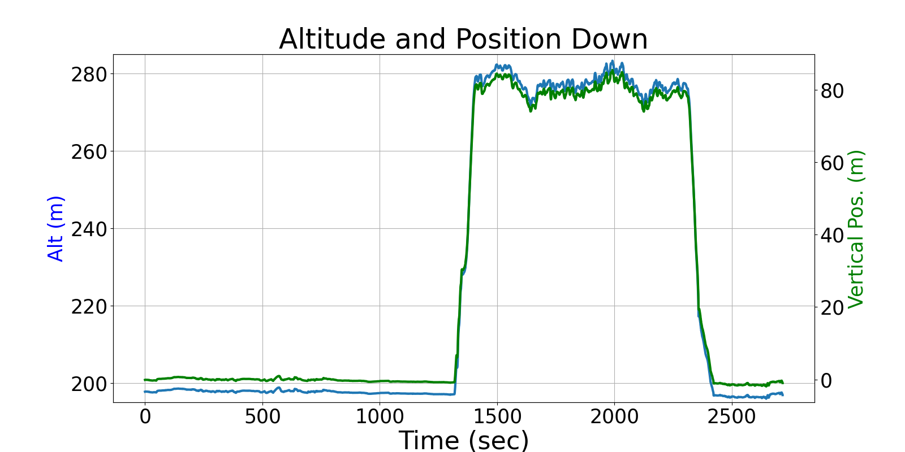
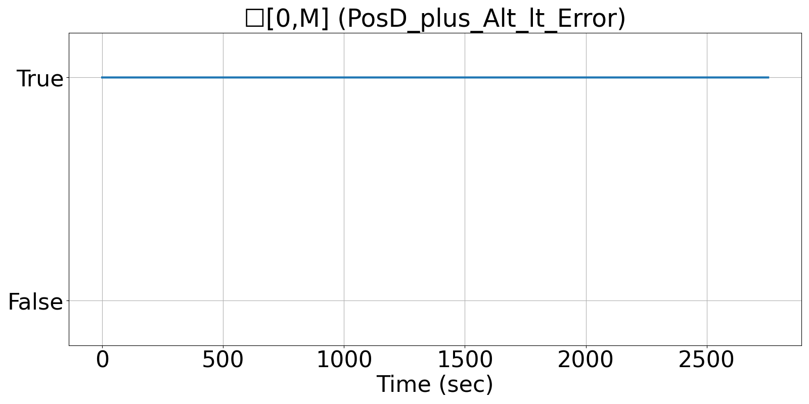
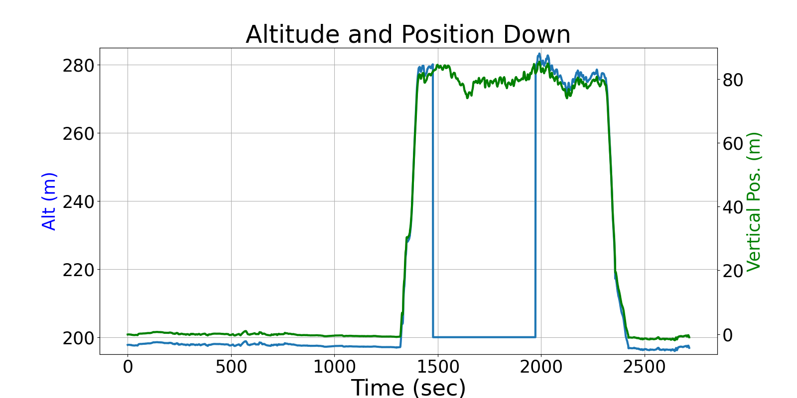
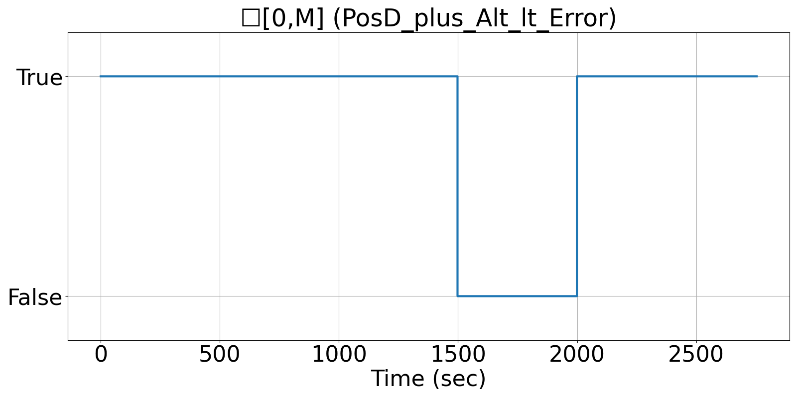

Integrating Runtime Verification into an
Automated UAS Traffic Management System
Matthew Cauwels, Abigail Hammer, Benjamin Hertz, Phillip H. Jones, Kristin Y. Rozier
This webpage contains supplementary specifications for "Integrating Runtime Verification into an
Automated UAS Traffic Management System" by M. Cauwels, A. Hammer, B. Hertz, P. H. Jones, and K. Y. Rozier
PM_UAS_5
Specification Description
There should be a linear relationship between the Alt and the PosD measurements. The error between these two should be less than ERROR_ALT_POSD
Signals Required
Alt, PosD
Boolean Conversion of Signals to Atomic Inputs
PosD_minus_Alt_lt_Error: |PosD + Alt| < ERROR_ALT_POSDMLTL Specification
☐[0,M] (PosD_minus_Alt_lt_Error)
Fault Explanation
The difference between the altitude and the vertical position are too widely varied. Because PosD is negative, the values are added to compensate.
Additional Notes
Figures



